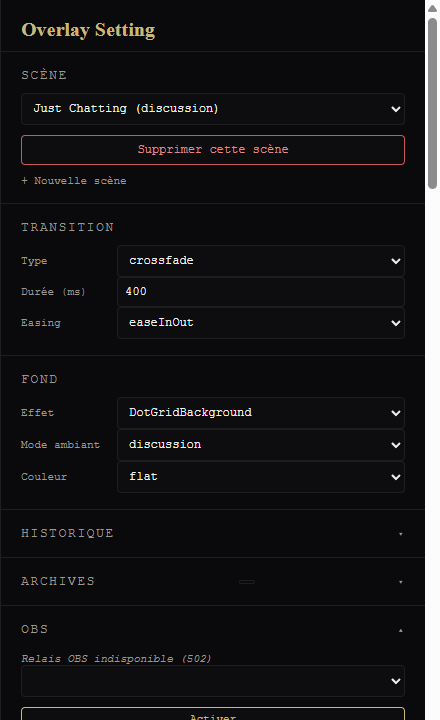
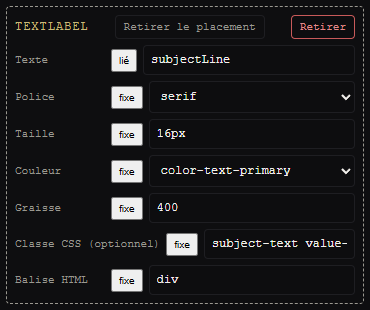

Tweaker sans écrire de code.
bun dev/start-dev.js(ou double-clic sur start-dev.bat). Jamais pendant un live — ces
serveurs écrivent sur disque. Ouvre automatiquement 3 onglets : preview auto-reload,
dotgrid-tuner.html, overlay-setting.html.
dev/overlay-setting.html — l'outil principalC'est l'éditeur visuel de l'overlay. Une scène à la fois (menu déroulant en haut), le rendu réel est affiché dans le panneau de gauche.

Chaque couche listée à droite affiche ses composants actuels.
StatBlock,
TextLabel, Badge...) → un formulaire apparaît avec les champs propres à ce type.state.duration).
subjectLine)
le connecte à l'état live ; les autres champs restent en fixe.Section « Fond » en haut du panneau — menu déroulant pour choisir le composant de fond
(DotGridBackground, RainBackground, MatrixGridBackground...).
Chaque effet a son propre formulaire (intensité, couleur, vitesse...). Voir
dev/component-field-schemas.js §BACKGROUND_FIELD_SCHEMAS pour la liste + les
paramètres de chacun.
Glisser-déposer directement dans l'aperçu. Chaque widget a une position en pixels absolus dans le canvas 1920×1080 — pas de flou d'ancrage, ce que tu vois dans la preview est la position OBS réelle.
(couches migrées en Placement pixel absolu — pas toutes, certaines restent en CSS
flex, voir docs/specs/scene-placement-protocol.md).
« + couche » pour en ajouter une entièrement vide. Renommage (input inline, couche goldbar
protégée) et réordonnancement (boutons ↑/↓ + glisser-déposer par poignée dédiée) des couches existantes.
Bas du panneau : « + scène » (id + couche minimale), bouton supprimer (archive, ne
supprime jamais vraiment — scenes/data/archived/<id>.scene.json, récupérable).
relay/server.js) lancé et un obs-config.local.js avec le token
(voir docs/obs-setup.md).
dev/dotgrid-tuner.html — réglage fin du DotGridSliders live sur les paramètres Simplex par mode (freqX/freqY/freqT/amplitude)
+ baseOpacity/dotRadius globaux. Bouton « Sauvegarder » réécrit directement
components/DotGridAnimated.js. Bouton « Copier » en secours si le serveur d'écriture
(dev/tuner-server.js) n'est pas lancé.
colorMode: 'noise' se règle depuis overlay-setting.html §Fond →
DotGridBackground, pas depuis le tuner.
DotGridAnimated.js, pas de formulaire dédié (zero preemptive code).
Ces limites ne sont pas des oublis — ce sont des choix « zero preemptive code » du projet : la UI correspondante s'ajoutera quand le besoin deviendra concret, pas avant.